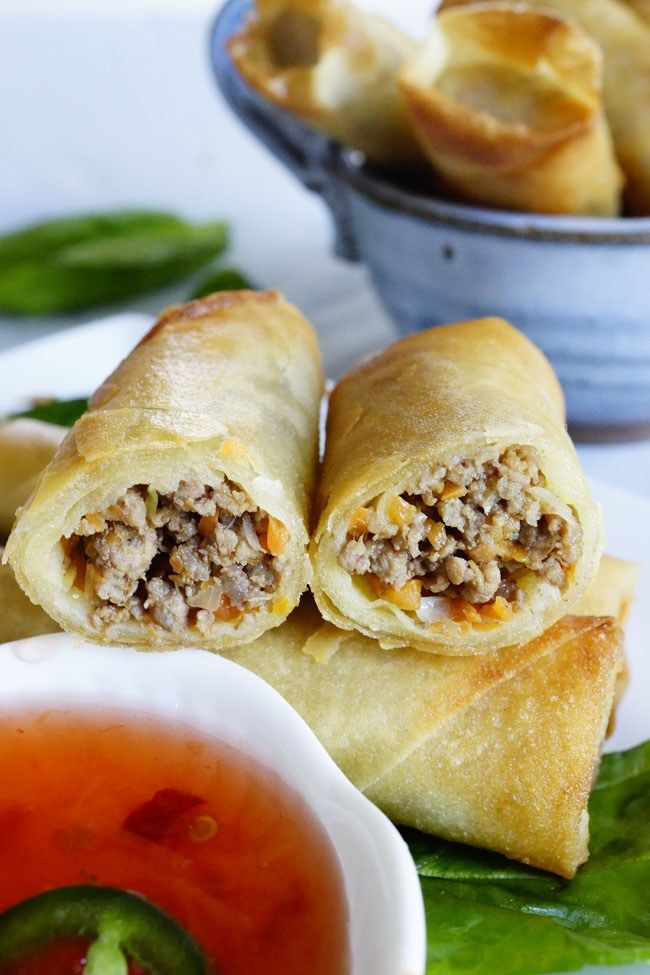

Filipino Lumpia

Crispy lumpia
This is a traditional Filipino recipe for lumpia, or fried spring rolls. They're made with paper-thin lumpia wrappers
and filled with a savory mixture of ground pork, cabbage, and other vegetables. Serve lumpia as a side dish or appetizer with a sweet chili dipping sauce.
ingredients:
- 2 lbs Ground beef
- 1 1/4 cups Carrots
- 4 cloves Garlic
- 1 Leeks, stem
- 1 Soy sauce or salt, dark
- 2 tbsp Cooking oil
Recipe Instructions
- Heat 1 tablespoon vegetable oil in a wok or large skillet over high heat. Add pork; cook and stir until crumbly and no pink is showing, 5 to 7 minutes.
Remove pork from the pan and set aside. Drain grease from the pan, leaving just a thin coating.
- Assemble lumpia: Place 3 heaping tablespoons of filling diagonally near one corner of a lumpia wrapper, leaving a 1 1/2 inch space at both ends. Fold the side along the length of the filling over the filling, tuck in both ends, and roll neatly and tightly to close.
Moisten the other side of the wrapper with water to seal the edge. Transfer to a plate and cover with plastic wrap to retain moisture. Repeat to assemble remaining lumpia.
- Heat 1/2 inch vegetable oil in a heavy skillet over medium heat for 5 minutes.
- Slide 3 to 4 lumpia into the hot oil, making sure the seams are facing down. Fry, turning occasionally, until all sides are golden brown, 1 to 2 minutes. Transfer to a paper towel-lined plate to drain. Repeat to fry remaining lumpia. Serve immediately.